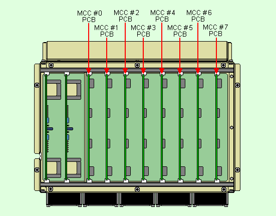
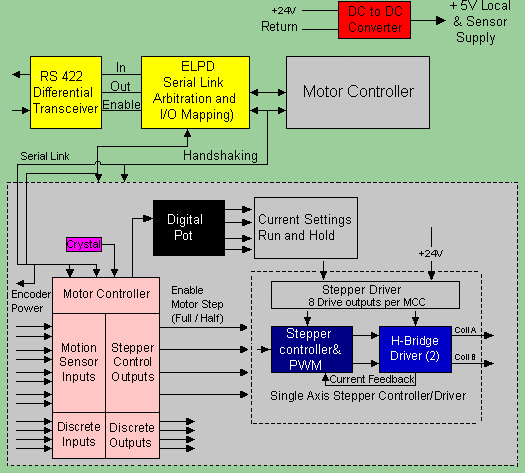

MCC PCB Operating Principles
Purpose
This document details the operating principles for the MCC/Ultrasonics Backplane
PCB Function
The MCCs (motion controller cards) primary functions are:
- Accept absolute or relative positioning orders from the main processor.
- Drive the stepper motors to move a device to a specific position using the exact parameters (velocity and acceleration) provided to it.
- Provide hardware revision detection.
- Provide sensor status detection (Home, Index, End, Eject, Float).
MCC PCBs Location

Note: The MCC PCB location and function is the same for the DxI 600 and DxI 800 instruments.
Operational Overview
Each motion control PCB (MCC) contains multiple programmable motor drivers that:
- Receive programming from the CPU through the communications PCB via an RS422 interface link.
- Control and drive eight stepper motors.
- Control eight output bits (for example, solenoid type devices).
- Command the state of the output bits independently of the stepper motor control.
- Monitor up to three types of sensor inputs per motor channel, which are home, end, and index. Each motor uses at least one sensor and at most two inputs.
- Take absolute or relative positioning orders from the main processor and drive a stepper motor to achieve that position using the specified parameters (velocity and acceleration).
- String a series of commands together in a chained move.
- Generate +5 V DC from 24 V DC.
Note:
- All of the MCC PCBs are identical and can be interchanged for troubleshooting.
- Unused sensor inputs, that are not used for motors, can be used as general purpose inputs. There can be between 8 and 16 non-motor related digital sensors per board.

Component Locations
Component locations are not provided for this PCB. Service personnel are advised not to change or repair this PCB unless directed to do so by the support group.
PCB Features and Functions
Features and functions of the MCC PCBs:
- Motor controller chip
- Step pulse generation
- Sensor monitoring and computation updates
- Movement profiles
- Run and hold transitions
- Run and hold current selection
- Initialization
Motor Controller Chip
Features and functions of the motor controller chip:
- Programmed in assembly language to control up to four stepper motors and move them to positions specified by the system software.
- Generates step pulses and direction signals that the controller / PWM chip interprets to activate the motor coils.
- (Main job) Counts steps and delivers step pulses at the specified rates to achieve the required velocity profile.
- Operates in open loop mode (does not employ encoder feedback to ensure known position). All channels have either an index or home sensor that the system software uses to ensure there has not been a loss of steps (because of stalling, etc.)
- Provides digital I/O that is independently sampled or controlled at system software request.
Step Pulse Generation
Features and functions for the step pulse generator:
- Generates motor step signals using high-speed output (HSO) channels.
- HSO channels compare digital words with a timer and toggle the associated output pins when the timer reaches the specified value.
- Output becomes the step signal that changes state for each step requested. (A separate pulse multiplier PLD generates a controlled pulse at each edge of this signal that is applied to the stepper drive controller as a step pulse.)
- Firmware controls the step pulse rate (velocity) by updating the timer compare values.
- HSO channels interrupt the firmware at each comparator match to reload the timer or comparator.
- Firmware counts the steps commanded to stop at the appropriate point.
- Tracks the absolute position of each axis and allows absolute position or relative moves.
- Supports only two- channels per motor controller chip operating at 5000 steps per second or a maximum combined step rate of 10,000 steps per second.
Sensor Monitoring and Computation Updates
Features and functions for sensor monitoring and computation updates:
- Each of the four channels operates on a round-robin basis with a 1-ms update rate, except that home flags are monitored every 125 µs.
- A 4000-Hz clock forms the basis for this control with one of the four axis positions, velocity, and sensor computations being updated every 250 ms.
- Sensor inputs (three per channel) can be independently programmed to perform the function of Home, Index and End sensors. The inputs can be used as discrete inputs also, to monitor for state changes to relieve the system processor from fast polling of the inputs.
Movement Profiles
Features and functions for the movement profiles:
- Each channel can be programmed to perform a trapezoidal velocity profile, by specifying the initial (base) step rate, acceleration, deceleration (normally the same), and slew rate.
- The Max Steps controls the end of the movement in the absence of a sensor endpoint.
- Overrun steps can be used to move a specified number of steps past the edge of a sensor flag.
- A programmable modulus provides the capability to operate circular devices while maintaining an absolute position.
Run and Hold Transitions
Features and functions for the run and hold transitions:
- The motor controller chip selects one of two programmed current levels for operating a motor.
- When not performing a movement, each axis reverts to a holding current level of approximately 10 to 30% of the run current to reduce power and heat generation.
- The exact current level can be selected for an individual axis.
- The motor controller chip maintains the run current setting for a programmable delay period following the completion of a move.
Run and Hold Current Selection
Features and functions for the run and hold current selection:
- The motor controller chip controls digital potentiometers for selecting run and hold currents of each channel.
- These pots use a low-speed serial link implemented in firmware and have a built-in EEPROM to retain the last programmed value while allowing changes to be downloaded.
Initialization
Features and functions for initialization of the MCC PCBs:
- At power-up or at commanded reset, all motor channels are deactivated (enable brought low) and the driver currents are set to minimum values. All digital outputs are deactivated.
- The state of all the sensors is reported on request of the system software.
- The state of the output drivers is commanded independently of the stepper motor control.
Interacting Devices
The MCC PCB interacts with:
- Communications PCB
- All stepper motors
- All solenoids
- Home, index, and end sensors
- Backplane PCB
- Module interface PCBs